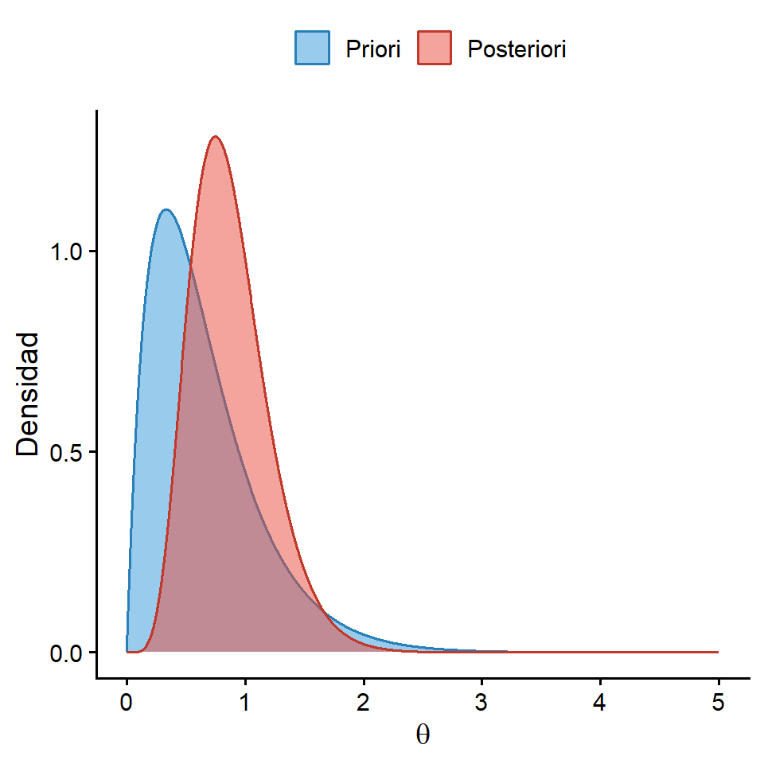

XS-0125 Inferencia Estadística Avanzada - I Semestre 2026
En el paradigma bayesiano, los parámetros \(\theta\) de un modelo probabilístico se tratan como variables aleatorias, en contraste con el enfoque frecuentista clásico, donde se asumen como valores fijos.
Por lo tanto, la esencia del enfoque bayesiado radica en actualizar nuestra incertidumbre combinando la información previa del parámetro (distribución a priori) con la evidencia empírica contenida en la muestra (función de verosimilitud) para obtener una distribución actualizada (distribución a posteriori).
Para el caso en el que tenemos dos eventos \(A, B\) tenemos que:
\[P(A\mid B) = \frac{P(A\cap B)}{P(B)}\]
La extensión para el caso de dos variables aleatorias \(X, Y\), es el siguiente:
\[f(X\mid Y) = \frac{f(y\mid x)f(x)}{f(y)} = \frac{f(y\mid x)f(x)}{\int {f(y\mid x)f(x)dx}} \propto f(y\mid x)f(x)\]
donde \(\propto\) es el símbolo de proporcional, dado que \(\int {f(y\mid x)f(x)dx}\) es una constante de integración.
Queremos estimar la proporción \(p\) de éxito de una nueva terapia. Si \(Y\) es el número de pacientes que responden en una muestra de tamaño \(n\), asumimos una verosimilitud Binomial: \[Y \mid p \sim \text{Binomial}(n, p)\]
Para incorporar la información previa sobre la eficacia del tratamiento, suponga que \(p\) sigue una distribución Beta: \[p \sim \text{Beta}(\alpha, \beta)\]
Obtenga la distribución condicional:
\[f(p\mid Y)\]
Partimos de la relación del teorema de Bayes:
\[f(p \mid Y) \propto f(Y \mid p) f(p)\]
\[f(p \mid Y) \propto \left[ \binom{n}{Y} p^Y (1-p)^{n-Y} \right] \cdot \left[ \frac{1}{B(\alpha, \beta)} p^{\alpha-1} (1-p)^{\beta-1} \right]\]
Dado que la proporcionalidad se evalúa respecto al parámetro \(p\), podemos omitir las constantes multiplicativas que no dependen de él \(\binom{n}{Y}\) y \(B(\alpha, \beta)\):
\[\begin{aligned} f(p \mid Y) &\propto p^Y (1-p)^{n-Y} \cdot p^{\alpha-1} (1-p)^{\beta-1} \\ &\propto p^{Y + \alpha - 1} (1-p)^{n - Y + \beta - 1} \end{aligned}\]
Este resultado final representa el núcleo de una nueva distribución de la familia Beta. Por ende:
\[p \mid Y \sim \text{Beta}(\alpha+Y, \beta+n-Y)\]
Dada una muestra aleatoria \(y_1, y_2, \cdots ,y_n\) que depende de un parámetro \(\theta\), se tiene que:
\[p(\theta \mid y_1, y_2, \cdots, y_n) = \frac{p(y_1, y_2, \cdots, y_n \mid \theta) \pi(\theta)}{p(y_1, y_2, \cdots, y_n)} \propto L(\mathbf{y} \mid \theta) \pi(\theta)\]
Donde:
Sea \(X_1, X_2, \cdots, X_n\) una m.a que sigue una distribución \(Exp(\theta)\), suponiendo que \(\theta \sim Gamma(\alpha, \beta)\), encuentre la distribución posterior.
\[f(\theta \mid X) \propto f(X \mid \theta) f(\theta)\]
Densidad de la muestra (Verosimilitud Exponencial): \[f(\mathbb{X} \mid \theta) = \prod_{i=1}^{n} \theta e^{-\theta X_i} = \theta^n e^{-\theta \sum_{i=1}^{n} X_i}\]
Densidad a priori (Distribución Gamma): \[f(\theta) = \frac{\beta^\alpha}{\Gamma(\alpha)} \theta^{\alpha-1} e^{-\beta \theta}\]
Sustituyendo ambas expresiones:
\[f(\theta \mid x) \propto \left[ \theta^n e^{-\theta \sum_{i=1}^{n} X_i} \right] \cdot \left[ \frac{\beta^\alpha}{\Gamma(\alpha)} \theta^{\alpha-1} e^{-\beta \theta} \right]\]
\[ f(\theta \mid x) \propto \theta^n e^{-\theta \sum_{i=1}^{n} X_i} \cdot \theta^{\alpha-1} e^{-\beta \theta}\]
\[\propto \theta^{n + \alpha - 1} e^{-\theta \left( \beta + \sum_{i=1}^{n} X_i \right)}\]
Este resultado final corresponde exactamente al núcleo de una nueva distribución Gamma.
\[\theta \mid x \sim \text{Gamma}(\alpha+n, \beta+\sum_{i=1}^n{x_i})\]
Sea \(\mathbb{X}=\{1.2, 0.8, 1.5, 0.5, 1.0\}\) una muestra aleatoria con parámetro \(\theta\) y \(\theta \sim Gamma(\alpha=2, \beta=3)\).

Figura 1: Ejemplo - Actualización Bayesiana.
Se dice que una familia de distribuciones previas \(\mathcal{F}\) es conjugada para una verosimilitud dada, si la distribución posterior también pertenece a \(\mathcal{F}\).
Ejemplos clásicos:
| Distribución (datos) | Previa conjugada |
|---|---|
| Bernoulli(\(p\)) | \(p \sim \text{Beta}(\alpha, \beta)\) |
| Binomial(\(n, p\)) | \(p \sim \text{Beta}(\alpha, \beta)\) |
| Geométrica(\(p\)) | \(p \sim \text{Beta}(\alpha, \beta)\) |
| Binomial Negativa(\(n, p\)) | \(p \sim \text{Beta}(\alpha, \beta)\) |
| Poisson(\(\lambda\)) | \(\lambda \sim \text{Gamma}(\alpha, \beta)\) |
| Exponencial(\(\theta\)) | \(\theta \sim \text{Gamma}(\alpha, \beta)\) |
| Normal(\(\mu, \sigma^2\)) | \(\mu \sim N(\mu_0, \sigma_0^2) \quad \text{y} \quad \sigma^2 \sim \text{GammaInversa}(\alpha, \beta)\) |
La conjugación permite obtener soluciones analíticas sin necesidad de métodos computacionales (MCMC).
Se tiene una idea de la distribución previa con los valores de los parámetros correspondientes de la previa. Por ejemplo, estudios previos sugieren que \(\theta \approx 0.8\). Calibramos \(\alpha, \beta\) para que la moda o la media de la Beta sea 0.8 y la varianza sea pequeña.
Se utiliza cuando no se tiene información previa del parámetro (Previa Plana), por ejemplo: \(\theta \sim \text{Uniforme}(0,1)\), o suponer una previa conjugada con parámetros cercanos o iguales a cero.
El Problema es que una previa plana para \(\theta\) no es necesariamente plana para \(\phi = \log(\theta)\).
Harold Jeffreys propuso una regla formal para obtener previas invariantes ante reparametrización.
\[\small p_J(\theta) \propto \sqrt{\mathcal{I}(\theta)}\]
Sea \(X_1,X_2, \cdots, X_n\) una m.a proveniente de una \(Poisson(\lambda)\)
\[\mathcal{I}(\lambda)= nE [ -\frac{\partial^2\ln(f_x)}{\partial \lambda^2}]\]
\[\ln(f_x)= -\lambda+x\ln(\lambda)-\ln(x!)\]
\[\Rightarrow \frac{\partial^2\ln(f_x)}{\partial \lambda^2}= \frac{-x}{\lambda^2}\]
\[\Rightarrow \mathcal{I}(\lambda)= nE [ \frac{x}{\lambda^2}]=\frac{n}{\lambda}\]
\[p_J(\lambda) \propto \sqrt{\frac{n}{\lambda}} \propto \lambda^{-\frac{1}{2}} \]
\[=\lambda^{\frac{1}{2}-1}e^{0} \sim Gamma(\frac{1}{2},0.0001)\]
En el enfoque bayesiano encontrar un estimador que resuma la información del parámetro va a depender de la función de pérdida que se utilice.
Función de Pérdida Cuadrática:
\[\small \hat{\theta} = E[\theta\mid X]\] Esperanza de la posterior.
Función de Pérdida Absoluta:
\[\small \hat{\theta} = mediana(\theta \mid X) \] Buscar el percentil 50 de la posterior.
Función de Pérdida 0-1:
\[\small \hat{\theta} = moda(\theta \mid X) \] Buscar el máximo de la posterior.
A diferencia de los intervalos de confianza frecuentistas (donde el parámetro se considera fijo y el intervalo es el aleatorio), en el enfoque bayesiano el parámetro \(\theta\) se trata como una variable aleatoria. Porende, aquí sí es válido afirmar que existe una probabilidad de\(1-\alpha\) de que el verdadero valor del parámetro se encuentre dentro del intervalo, condicionado a los datos observado.
Intervalo de Credibilidad (Basado en Cuantiles de la distribución posterior)
\[P(a \le \theta \le b \mid X_1, X_2, \cdots , X_n) = \int_{a}^{b} \pi(\theta \mid x_1, x_2, \cdots, x_n) \, d\theta = 1 - \alpha\]
Para un intervalo bilateral, se acumula una probabilidad de \(\alpha/2\) en cada extremo. Donde \(a\) y \(b\) corresponden a los cuantiles \(\alpha/2\) y \(1 - \alpha/2\) de la distribución posterior. En caso de requerirse un intervalo unilateral, se asigna la probabilidad \(\alpha\) a la cola respectiva.
Otro tipo de intervalo usado son los intervalos de alta densidad.
Para evaluar un contraste de hipótesis clásico entre dos regiones del espacio paramétrico:
\[H_0: \theta \in \Omega_0 \quad \text{contra} \quad H_a: \theta \in \Omega_a\]
Un criterio de decisión directo consiste en calcular las probabilidades a posteriori de cada espacio dado los datos (\(\mathbb{X}\)), y seleccionar aquella hipótesis que acumule la mayor probabilidad.
Regla de decisión:
Suponga que la posterior sigue \(Exp(\theta=3.1)\) y se desea contrastar.
\[H_0: \theta \le 1 \quad H_1: \theta > 1\]
al calcular la probabilidad de \(H_0\) se obtiene:
\[P(H_0 \mid \mathbb{X}) = P(\theta \le 1 \mid \mathbb{X}) = \int_{0}^{1} 3.1 e^{-3.1 \theta} \, d\theta \approx 0.045\]
por ende
\[P(H_1 \mid \mathbb{X}) = P(\theta > 1 \mid \mathbb{X}) \approx 0.955\]
Como \(P(\theta \in \Omega_1 \mid \mathbb{X}) > P(\theta \in \Omega_0 \mid \mathbb{X})\) se rechaza \(H_0\).